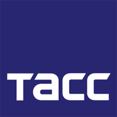
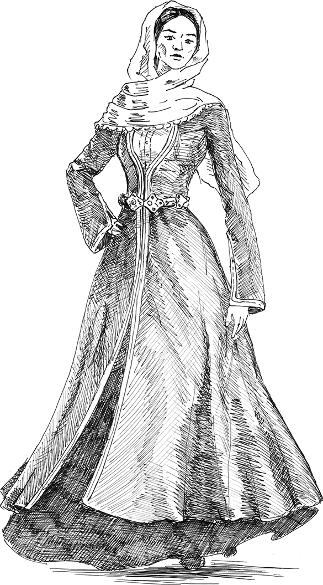
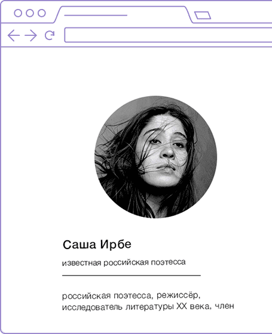
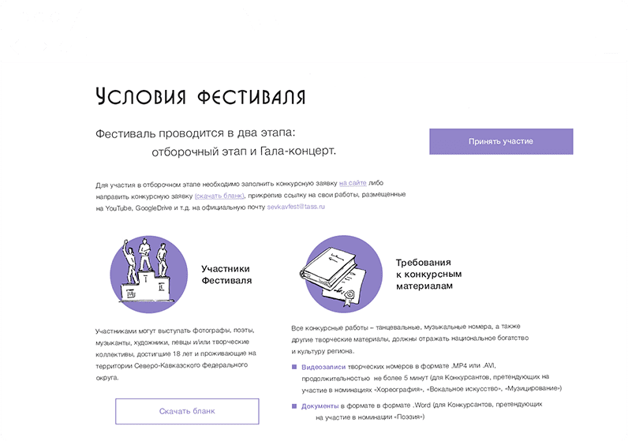
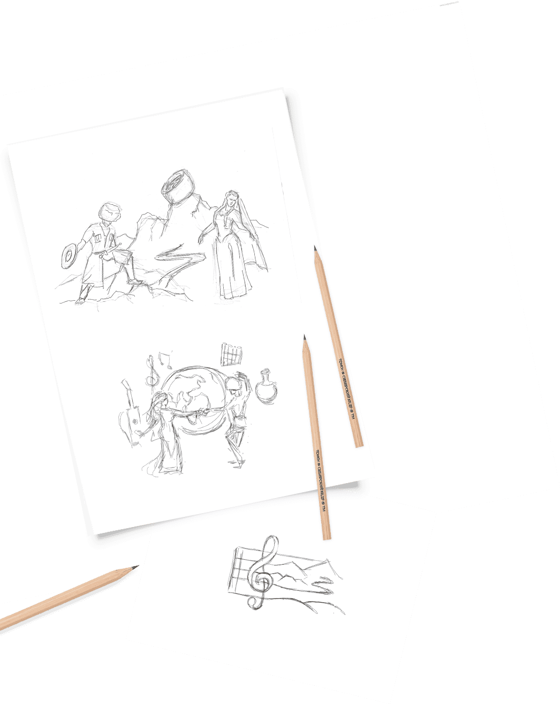
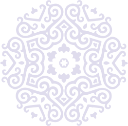
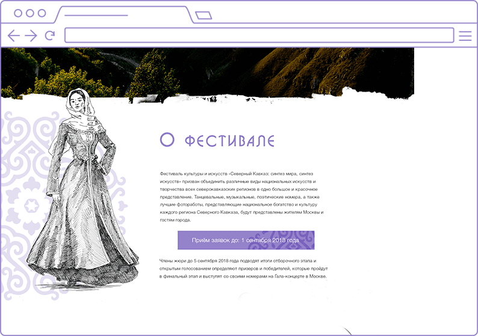
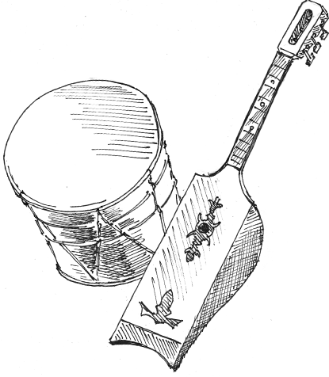
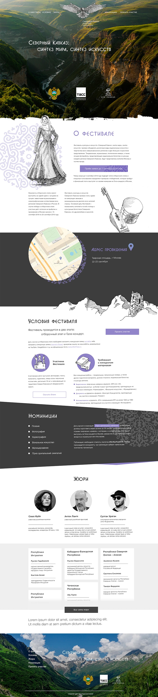

<!DOCTYPE html><html lang="ru"><head><meta charset="utf-8"><title>WayToStart | ТАСС промо</title><meta name="description" content="WayToStart, промо-страница: ТАСС"><meta name="cmsmagazine" content="cdc79537f1d9f113c73cd2fd46ca0125"><meta name="author" content="Веб-студия WayToStart"><meta name="viewport" content="width=device-width, initial-scale=1, shrink-to-fit=no"><link rel="preload" href="fonts/a_bosanovacps-regular-normal.woff2" as="font" crossorigin="anonymous"><link rel="preload" href="fonts/helveticaneuecyr-light-normal.woff2" as="font" crossorigin="anonymous"><link rel="preload" href="fonts/helveticaneuecyr-regular-normal.woff2" as="font" crossorigin="anonymous"><link rel="stylesheet" href="css/main.min.css"></head></html><body class="tass-page"><div class="tass-page__container"><div class="tass-intro tass-page__intro"><div class="tass-s_container tass-intro__container"><div class="tass-logo tass-intro__logo"></div><div class="tass-intro__heading"><h1 class="tass-intro__title">Разработка сайта для ТАСС</h1><p class="tass-s_description tass-intro__subtitle">для Фестиваля культуры<br>и искусств Северного Кавказа</p></div></div></div><div class="tass-customer tass-page__customer"><div class="tass-s_container tass-customer__container"><picture class="tass-s_picture tass-customer__image-wrapper"></picture><p class="tass-s_description tass-customer__description">Рамзан Ахматович Кадыров принимал наши проекты :)</p></div></div><div class="tass-conditions tass-page__conditions"><div class="tass-s_container tass-conditions__container"><picture class="tass-s_picture tass-conditions__image-wrapper tass-conditions__image-wrapper--1"></picture><picture class="tass-s_picture tass-conditions__image-wrapper tass-conditions__image-wrapper--2"></picture><p class="tass-s_description tass-conditions__description">Разработка промо сайта по заказу ТАСС для Фестиваля культуры и искусств «Северный Кавказ»</p></div></div><div class="tass-design tass-page__design"><div class="tass-s_container tass-design__container"><p class="tass-s_description tass-design__description tass-design__description--top">Дизайн проекта отрисовывался в стиле ЛайнАрт (от руки), что позволило подчеркнуть индивидуальность<br>ландшафта и самого события.</p><div class="tass-design__illustration"><picture class="tass-s_picture tass-design__image-wrapper tass-design__image-wrapper--flow-1"></picture><p class="tass-s_description tass-design__description tass-design__description--middle">Создание уникальных иллюстраций посвященных культурному наследию</p></div><picture class="tass-s_picture tass-design__image-wrapper tass-design__image-wrapper--flow-2"></picture><p class="tass-s_description tass-design__description tass-design__description--bottom">Сайт очень понравился организаторам мероприятия и руководству<br>Чеченской республики.</p><picture class="tass-s_picture tass-design__image-wrapper tass-design__image-wrapper--flow-3"></picture><picture class="tass-s_picture tass-design__image-wrapper tass-design__image-wrapper--long"></picture></div></div><div class="tass-decoration tass-page__decoration"><div class="tass-s_container tass-decoration__container"><h2 class="tass-decoration__heading">Шрифты и оформление</h2><ul class="tass-decoration__list"><li class="tass-decoration__item tass-decoration__item--colors"><dl class="tass-decoration__terms tass-decoration__terms--narrow"><dt class="tass-decoration__term">Цвет:</dt><dd class="tass-decoration__details"><ul class="tass-decoration-colors"><li class="tass-decoration-colors__item"><span class="tass-decoration-colors__icon tass-decoration-colors__icon--violet" role="img" aria-label="Фиолетовый"></span><span class="tass-decoration-colors__name">#8980c3</span></li><li class="tass-decoration-colors__item"><span class="tass-decoration-colors__icon tass-decoration-colors__icon--dark-gray" role="img" aria-label="Тёмно-серый"></span><span class="tass-decoration-colors__name">#292929</span></li><li class="tass-decoration-colors__item tass-decoration-colors__item--last"><span class="tass-decoration-colors__icon tass-decoration-colors__icon--ultra-gray" role="img" aria-label="Белый"></span><span class="tass-decoration-colors__name">#efefef</span></li></ul></dd></dl></li><li class="tass-decoration__item tass-decoration__item--headings"><dl class="tass-decoration__terms tass-decoration__terms--wide"><dt class="tass-decoration__term">Заголовки:</dt><dd class="tass-decoration__details"><span class="tass-decoration__string">BosaNova</span></dd></dl></li><li class="tass-decoration__item tass-decoration__item--content"><dl class="tass-decoration__terms tass-decoration__terms--wide"><dt class="tass-decoration__term">Контент:</dt><dd class="tass-decoration__details"><span class="tass-decoration__string tass-decoration__string--special-font">Helvetica</span></dd></dl></li></ul><div class="tass-decoration__image-wrapper"></div></div></div></div><script src="js/picturefill.js"></script></body>